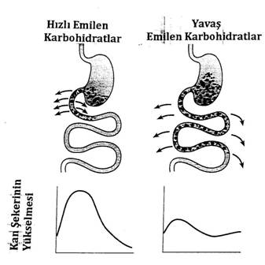

|
Tablo-2 |
||
| Saat | Kan Şekeri mgr/dl | |
| 19.30 | 127 | |
| 4-5 YEŞİL ERİK | 20.30 | 141 |
| LAHANA SALATASI | 21.30 | 135 |
| 23.30 | 95 | |
| SABAH | 07.30 | 123 |
| 3 ADET YUMURTA KAHVALTI SABAH | 08.30 | 137 |
| 09.30 | 115 | |
| BİR BARDAK FINDIK, 2-3 KAYISI | 12.00 | 114 |
| 14.00 | 135 | |
Tablo2’de gördüğümüz gibi, sık sık ve gece geç saatlerde ara öğünlerde yediğim sağlıklı yiyecekler bile kan şekerimin ertesi sabah yüksek kalmasına neden olmaktadır. Yüksek kan şekeri gün boyunca da devam etmektedir. Daha önce de birkaç kez dile getirmiş olduğumuz gibi, ağzımıza aldığımız herhangi bir lokma ile bile kan şekerimiz ve insülinimiz hemen yükselir ve de yüksek kalır.
Örnek olarak, saat 22.00 civarlarında yediğimiz ya da içtiğimiz şekerli bir içecek sonucu kan insülinimiz yükselecek ve 1-2 ya da 2,5 saat süre yüksek kalacaktır. Bu sürenin sonunda da glukagon hormonu devreye girecek ve 1-2 saat de onun etkisi devam edecektir. Leptin hormonu da yemeklerden 4-5 saat sonra devreye girerek, depolanmış olan yağları kan şekerine dönüştürüp gerekli enerji ve yakıtı dolaşıma sağlayacaktır. Leptin hormonu sabah saat 02.00-05.00 arasında en yüksek düzeyde salgılanmaktadır.
Bu süre içinde leptin hormonunun salgılanmasına imkân sağlandığında, uykumuzda da yağlarımızın yıkılması için zaman ve zemin hazırlanmış olacağından, istemediğimiz fazla kilolarımızı verme imkânımız olacaktır.[41]
Bu durumda doğru bilinen büyük bir yanlış ortaya çıkıyor ve Karatay Diyeti ile ara öğün bir efsane oluyor diyebilir miyiz?
Kilo verebilmemiz ve verdiğimiz kiloda hayat boyu kalabilmemiz için, düşük glisemik indeksli yiyeceklerin tüketilmeleri yeterli değildir. Bu şekilde beslenmemizle birlikte, fizik aktivitenin artırılması ve yemeklerimizin zamanlamasının da önemi büyüktür. Yıllarca kabul edilenin aksine, gündüz 4-5 saat içinde ara öğünler yemenin doğru olmadığı gibi, gece yatmaya yakın bir ara öğün yenilmesi de son derece zararlıdır! Bu nedenle geç saatlerde yemek yiyenler, fizyolojik olarak gece salgılanan kritik hormon leptinin fonksiyonlarını engellemiş oldukları için sürekli kilo almaya devam ederler ve verdikleri kiloları da geri alırlar. Özetle, eğer akşam yemeğimizi erken saatlerde yersek uyurken rahatlıkla kilo verebiliriz. Eğer geç saatlerde yersek kilo almaya devam ederiz. Bazı hastalarımın “Ben ancak uykuda kilo verebildim” ifadelerinin temelinde, bu bölümde açıklamış olduğum doğal fizyolojik olaylar yatmaktadır.[42]
İnsülin ve leptin direncini başlatıp, kilo alımına ve devamında hiperinsülinemik hastalıklara neden olan en önemli faktörleri özetleyebilir miyiz?
• En başta hareketsizlik ve tembellik.[43]
• Yiyeceklerin tipi, yüksek glisemik indeksli besinler.
• Yemeklerin sağlıksız pişirilme ve tüketilmeleri.
• Kalorisi fazla korkusuyla sağlıklı olan yağların yenmemesi!
• Gündüz ve gece öğünlerinin zamanlama ve saatlerinin dikkate alınmaması.
• Sık sık ve ara öğün yenmesi.
• Yemek porsiyonlarının aşırı miktarda olması!
Karatay Diyeti’nin asıl amacı insülin ve leptin direncini kırmak... Peki, bu diyeti uygulayanların hayatında ne gibi değişiklikler olacak?
• Acıkma hissi olmayacak, gün boyu tokluk hissi devam edecek.
• Gıdalar bozulmamış ve doğal olarak tüketilecek ve bu şekilde insülin ve leptin direnci kırılacak.
• Ayrıca sağlıklı yağ ve proteinler rahatla yenilebilecektir.
Özet olarak önerilerimizi aşağıda şu şekilde sıralayabiliriz:
• Sabahları kuvvetli ve proteinli kahvaltı yapılması şart.[44], [45]
• Öğünler arasında en az 4-5 saat geçmesine dikkat edilmelidir.[46]
• Günde 3 öğünden fazla yemek yenilmemeli, ara öğünler kalkmalıdır.[47]
• Öğünler arasında bol limonlu su, limonlu şekersiz çay ve ayran içilebilir.
• Her gün 2-3 litre sıvı almaya dikkat edilmeli.
• Akşam saat 20.00’den sonra hiçbir şey yenilmeyecek.[48], [49]
• Her gün veya akşam en az 40-60 dakika yol yürümeli ya da en az 40-60 dakika sevilen bir fizik aktivite yapılmalı.
• Yemekler düşük ısıda, uzun sürede pişirilmeli.
• Yemeklerde soğuk sıkım sızma zeytinyağı veya saf tereyağı kullanılmalı.
• Sıcak yemekler ve kızartmalarda kesinlikle mısırözü veya ayçiçeği yağı kullanılmamalı!
• Yemeklere, pişirildikten sonra damak tadına göre nane, maydanoz, kekik, siyah ve acı kırmızıbiber, sumak vb eklenebilir.
• Salatalarda da soğuk sıkım sızma zeytinyağı veya keten tohumu yağı, bol sirke (geleneksel usul doğal fermantasyon) ve limon, ayrıca arzuya göre sarımsak kullanılabilir.
• Salatalara zeytin, peynir, yoğurt, susam veya keten tohumu eklenebilir.
• Bol sirkeli (geleneksel usul doğal fermantasyon), az tuzlu (kristal kaya tuzu) ev turşusu yapılarak tüketilebilir.
• Kabız olmamaya dikkat edilmeli. Doğal yiyeceklerle her gün iki kez yumuşak bir şekilde büyük abdeste çıkılmalı.
Yüksek glisemik indeksli yiyecek ve içecekleri ne yapacağız?
Eğer kilo vermek ve hayat boyu verdiğimiz kiloda kalmak istiyorsak; önce mutfak dolapları ve buzdolabını yüksek glisemik indeksli yiyeceklerden arındırmamız gerekir. Daha sonra da bu yiyecek ve içecekleri satın almamak, evimize, mutfağımıza, buzdolabımıza ve vücudumuza sokmamak şarttır!
Evimize ve mutfağımıza hiçbir zaman girmeyecek yüksek glisemik indeksli (Gİ=100) yiyecekler ve içecekler hangileridir?
Kilo vermek ve karaciğer yağlanmasını önlemek amacı ile glisemik indeksi 100 olan yiyecek ve içecekler, eve ve mutfağa sokulmayacağı gibi dışarıda da tüketilmemelidir!
Sağlıklı bir vücuda girmemesi gereken yiyeceklerin başında ‘en tatlı zehir’ olarak kabul edilen, şekerler gelmektedir. Her türlü şeker, bal ve pekmezin glisemik indeksi çok yüksek olup, 100’dür.
Şeker maalesef ülkemizde hem tatlılarla, hem de içeceklerle aşırı miktarda tüketilmektedir. Rafine edilmiş şekerde (toz ve kesme şeker) ve meyve sularında bulunan (kendimiz taze olarak sıkmış olsak bile) şeker (fruktoz), çok hızlı bir şekilde dolaşıma geçerek, beraberinde kan şekeri ve insülinimizi hızlı bir şekilde yükseltir. Kanda aşırı hızla yükselen insülin hormonu da, dolaşımda uzun süre yüksek kalarak insülin ve leptin direncini başlatır. Başlamış olan insülin ve leptin direncini de giderek artırır. ABD’li bilim adamları bütün dünyada şişmanlık ve obezitenin yaygın bir hale gelmesinin sebebinin, ‘fruktoz’ içeren yiyecek, içecek, şurup ve pekmezlerin aşırı miktarda tüketilmeleri olduğunu bildirmiştir.
Ülkemizde çok sevilen, en ucuz olan ve en fazla tüketilen içecek çaydır. Gün boyu 8-10 bardak çay içen bir kişinin, her çay bardağına iki kesme şeker attığını düşünelim. Bu kişinin kan şeker ve insülini bütün gün yükselip inecektir ya da hep yüksek kalacaktır. Tabii gün içinde üç öğün yemeğini, ara öğünleri de tüketeceğini düşünecek olursak, o kişinin kan şeker ve insülin değerleri daima yüksek olacaktır.
Şeker (diyabet) hastası olmayan normal kişilerde dahi, kan şekerinin (kısa bir süre yüksek kalmasının bile) serbest oksijen radikallerinin yapımını artırdığından dolayı, insülin ve leptin direncini artırarak vücutta tahribat yaptığı gösterilmiştir.
Eroin kadar bağımlılık yapan, ‘en tatlı zehir’ denilen şeker ve yüksek glisemik indeksli yiyeceklerin her türlüsü kanımıza geçer geçmez kan şekerini büyük bir hızla yükselterek, serbest oksijen radikallerini aşırı miktarda artırır. Serbest oksijen radikalleri ise birçok sağlık sorununu başlatan nedenlerin başında gelen en zararlı maddelerdir. Bu nedenle 12 saatten fazla açlıktan sonra ölçülen açlık kan şekerinin 90 mgr/dl’nin üstünde bulunması, hasta olmayan sağlıklı kişilerde bile bütün damarlarda ve organizmanın tüm hücrelerinde bozukluklar başlatır. En tatlı zehirlerin tüketilmesi ile dejeneratif hastalıklar, bizler farkında olmadan yavaş yavaş gelişir!
En tatlı zehir dediğimiz şeker ve şekerle yapılan tatlıların sebep olduğu dejeneratif hastalıkları sayabilir miyiz?
Elbette... Şeker ve şekerli tatlı tüketiminin insan vücudunda sebep olduğu tahribatlar ve hastalıklar şunlardır:
• Canlı organizmalardaki birçok sistemin fizyolojik çalışmasında bozulmaya neden olur.
• Vücudun mineral dengesini bozar.
• Krom eksikliğine neden olur.
• Bakır eksikliğine neden olur.
• Kalsiyum ve magnezyum emilimini bozar.
• Kanda E vitamininin miktarını azaltır.
• Kanda büyüme hormonu düzeyini azaltır.
• Protein emilimini engeller.
• Protein yapısına zarar verir.
• Proteinlerin vücuttaki rolünde kalıcı değişikliklere yol açar.
• Dokuların esnekliğini ve işlevini bozar.
• Enzimlerin fonksiyonlarını bozar.
• DNA yapısında zarara yol açar.
• Alkol gibi zehirleyicidir.
• Bağımlılık yapıcı bir maddedir.
• Alkolizme de neden olabilir.
• Vücut bağışıklık sistemini yıkar ve zayıflatır.
• Vücutta serbest oksijen radikallerin artmasına ve oksidatif strese neden olur. Serbest oksijen radikalleri, bütün dejeneratif hastalıkların, kanser ve yaşlanmanın temel nedenidir.
• Viral ve bakteriyel her türlü enfeksiyon hastalığına karşı korunmayı zayıflatır.
• Yaraların ve hastalıkların iyileşmesini geciktirir.
• Beyinde delta, alfa ve tetra dalgalarını bozar.
• Depresyona neden olur.
• Baş ağrısı ve migrene neden olur.
• Dikkatsizliğe neden olur.
• Şeker ve tatlı alımı azaltıldığında duygusal kararlılık artar.
• Görmeyi bozar ve körlük yapar.
• Miyop hastalığına (uzağı görememe) neden olur.
• Gözlerde katarakta neden olur.
• Tükürük asiditesini artırarak diş çürümelerine neden olur.
• Diş ve diş eti hastalıklarına neden olur.
• Besin alerjisine neden olur.
• Derimizdeki kollajen yapısını bozar ve ciltte kırışıklıklara neden olur.
• Erken yaşlanmaya sebep olur.
• Gebelikte kan zehirlenmesine neden olur.
• Yeni doğanda dehidratasyona yani bedenin fazla miktarda sıvı kaybetmesine neden olur.
• Çocuklarda hiperaktivite, anksiyete, konsantrasyon bozukluğu ve zayıflığına neden olur.
• Çocuklarda adrenalin seviyesinin ani artışlarına sebep olur.
• Çocuklarda egzamaya neden olur.
• Çocuklarda uyuşukluğa ve aktivite azalmasına neden olur.
• Okul çağındaki çocuklarda başarısızlık nedenidir.
• Çocuk felci riskini arttırır.
• Kadınlarda premenstürel sendromu (adet dönemi öncesi yaşanan sıkıntılar) daha kötü hale getirir.
• Erkeklerde estrodiol (doğal oluşan östrojenin en kuvvetli formu) seviyesini arttırır.
• Vücutta hormonal dengesizliğe neden olur. Bazı hormonlar az çalışırken, bazı hormonlar aşırı çalışır.
• İnsülin ve leptin direncini başlatır ve giderek artırır.
• Şeker ve tatlı tüketiminin ardından kan şekeri, kompleks karbonhidrat olan nişastadan, 2 - 5 kat daha fazla yağa dönüşür.
• Vücutta su tutulmasını arttırır.
• Yüksek yoğunluklu lipoprotein olan HDL’yi düşürür ve dejeneratif hastalıkların başlangıcı olan kan trigliseritlerini yükseltir.
• Kilo alma, şişmanlık ve obeziteye neden olur.
• Sindirilememiş kompleks karbonhidratlar nedeni ile oral glukoz tolerans testinde glukoz seviyesinin yüksek çıkmasına neden olur.
• Açlık şekerini yükseltir.
• Hipoglisemiye (kan şekeri düşmesi) neden olur.
• Diyabete (şeker hastalığına) neden olur.
• Obez hastalarda yüksek kan basıncına neden olur.
• Kalp, damar ve felç hastalıklarına neden olur.
• Sistolik kan basıncını arttırır.
• Kanın pıhtılaşmasını artırır ve damarların tıkanmasına neden olur.
• Aterosikleroz denilen damar sertliğine neden olur.
• Astıma neden olur.
• Akciğerlerde amfizeme neden olur.
• Karaciğer büyümesi ve yağlanmasının nedenidir.
• Safra taşına neden olur.
• Böbreği büyütür ve patolojik değişikliklerine neden olur.
• Böbrek taşlarına sebep olur.
• Böbrek üstü bezlerin fonksiyonlarını yavaşlatır.
• İdrar elektrolit dengesini bozar.
• Sindirim siteminin asiditesini artırır.
• Hazımsızlığa neden olur.
• Gastrik ve duodenal ülseri bulunan hastalarda tekrarlama sıklığında neden olur.
• Fosfataz adlı enzimi bağlar ve yok eder. Böylece sindirim işlemi zorlaşır.
• Besinlerin gastrointestinal sistemde ilerlemesini yavaşlatır, bağırsak hareketlerinin 1 numaralı düşmanıdır. Kabızlık yapar.
• Kronik bağırsak hastalıklarından ‘crohn hastalığı’ ve ‘ülseratif kolit’ riskini artırır.
• Bağırsaklarda pamukçuk hastalığının nedeni olan ‘candida albicans’ın (mantar) kontrol edilemeyen üremesine neden olur.
• Dışkıdaki safranın ve kalın bağırsakta bulunan bakteriyel enzimlerin konsantrasyonunu artırır.
• Apandisit gibi tehlikeli bağırsak iltihaplanmasına neden olur.
• Hemoroit dediğimiz, basur hastalığına neden olur.
• Bacaklardaki varislere neden olur.
• Eklem ve tendonları hassaslaştırır.
• Kronik artrit hastalıklarına (eklem hastalıkları) neden olur.
• Gut hastalığına yakalanma riskini arttırır.
• Kemik erimesini (osteoporoz) başlatır.
• Mültipl skleroz hastalığına neden olur. Epileptik nöbetlere neden olur
• Alzheimer hastalığına neden olur.
• Parkinson hastalığı olan kişilerde şeker tüketiminin fazla olduğu görülmüştür.
• Her türlü kanser hücresini besler. Safra yolu kanserine yol açabilir.
• Mide kanseri riskini arttırır.
• Pankreasın yağlanmasına ve kanserine neden olur.
• Meme, yumurtalık, prostat ve kalın bağırsak kanserine neden olur.
• Şeker, şekerli tatlılar, meyve şekeri (sükroz), şurup ve pekmezlerin tüketilmesi akciğer kanseri için de ciddi risk faktörü oluşturur.
Yıllardır ana besin maddelerimizden biri olan şekerin bu kadar kötü, öldürmeyip süründüren hastalıklara sebep olduğu nasıl anlaşıldı?
Bir insanda ortalama 4-5 litre kadar kan vardır. Normal kişilerin kanında 12 saat açlıktan sonra 1 tatlı kaşığı kadar şeker bulunur. Buna karşın 180 mililitrelik bir kutu şekerli içecekte tam 6 tatlı kaşığı kadar şeker vardır. Bu miktar kanımızda bulunan şekerden çok daha fazladır ve hızlı bir şekilde kan insülinini yükseltir. Bir kutu kola içtiğimiz zaman vücudumuzda ne gibi değişiklikler meydana geldiği bilimsel olarak incelenmiş ve şu sonuçlar elde edilmiştir:
• İlk 10 dakikada, kana hemen 10 çay kaşığı kadar şeker girer. Bu normal günlük dozun 100 katı kadardır. Bulantı olmamasının nedeni, içinde bulunan ‘fosforik asittir’.
• İlk 20 dakikada, kan şekeri aşırı şekilde yükselir. Bunun sonucu pankreastan aşırı derecede insülin salgılanır ve kan şekerinin fazlası karaciğerde yağ olarak depolanmaya başlar.
• 40 dakika içinde kafeinin tamamı dolaşıma girmiş olur. Kan basıncı yükselir, karaciğerden daha fazla şeker yapılarak kana geçer ve kan şekeri tekrar yükselir.
• 45 dakika içinde beyinde dopamin yapımı artar, mutluluk hissi başlar (eroinin etkisine benzer bir etki meydana gelir).
• 60 dakika içinde ani açlık hissi oluşur.
• Kolaya ve tatlılara saldırılır.
• Bu kısır döngü devam ettiği süre karaciğer ve göbek yağlanması artar, vücudun tüm hücrelerinde leptin ve insülin direnci gelişir.
• Şişmanlık başlamıştır ve bütün dejeneratif hastalıkların nedenidir.
Hazır satılan veya taze sıkılmış meyve suları da birçok diyet listesi ve beslenme programlarında, sağlıklı olduklarından bol miktarda ve ciddi bir şekilde önerilmekte. Ancak hiçbir diyet listesi veya beslenme programında meyve sularının aşırı miktarda şeker (fruktoz) içerdiğinden ve kan triglesidlerini yükselttiğinden nedense hiç bahsedilmemekte. Oysa meyve şekeri olan fruktozun, organizma ve sağlığa bütün diğer şeker türlerinden daha zararlı olduğu bilimsel olarak gösterilmiştir.
Bir bardak taze sıkılmış meyve suyu da sıvı olduğu ve içerdiği lifler tamamen ufalanıp parçalandığı için, hızla kana geçerek kan şekeri ve insülinini çok ani olarak fazla miktarda yükseltir. Bunun sonucu kan şekerinde birden düşüş olur ve kısa sürede reaktif hipoglisemi atağı gelişir. Hemen bir tatlı ya da şekere hücum ederiz! İşte bu şekilde bir bardak meyve suyu insülin direncini sinsi bir şekilde başlatmış olur. İnsülin direnci zaten gelişmiş olan kilolu ve şişman kişilerde ise insülin direncinin artmasına neden olmaktadır. Obezlerde şekerin hızlı emilimi, sık sık acıkma nedenidir ve aşırı miktarda besin alınımını tetikler. Gençlere yönelik rehabilitasyon kamplarında az şekerli ve düşük karbonhidrat içerikli diyet uygulandığında, anti-sosyal davranışlarda yüzde 44 oranında düşüş görüldüğü bildirilmiştir. Bilimsel araştırmalar, kişi başına düşen şeker tüketiminin yüzyıllar boyunca giderek arttığını göstermiştir. 1700’lü yıllarda kişi başına yılda10 kg’dan az şeker tüketilmekteyken, 1800’lü yıllarda bu oran kişi başına yılda 30 kg’dan fazla olarak belirlenmiştir. 1900’lü yıllarda -yani geçtiğimiz yirminci yüzyılda- ise kişi başına yılda 60 kg’dan fazla miktarda şeker tüketildiği bildirilmiştir.[50] İngiltere’de yapılan bilimsel bir çalışmada, 12 saatlik açlık kan şekeri 100-125 mgr/dl olan kişilerin, 300 kat daha fazla kalp krizi geçirme riski olduğu bildirilmiştir.[51] Cleveland Kliniği yayınlarında da, 12 saatlik açlık kan şekerinin >90mgr/dl’den yüksek olan kişilerde kalp ve damar hastalıkları çok yüksek oranda görüldüğü bildirilmiştir. (NEJM Mayıs 2001) Neticede şeker tüketiminin son yüzyıllarda giderek artmış olduğunu ve buna paralel olarak da ilkel toplumlarda rastlanmayan, fakat endüstri toplumlarında artarak ortaya çıkan dejeneratif hastalıkların ya da hiperünsilemik hastalıkların artmış olduğunu görmekteyiz.
Sağlıklı kan şeker değerleri nasıl olmalıdır?
12 saatlik açlık kan şekeri değeri 100 mgr/dl altında ve herhangi bir yemekten 2 saat sonra ise bu değer 140 mgr/dl altında olmalıdır.
Bu bilgilerin ışığı altında kilo vermek ve daha sonra geri almamak, sağlıklı kalmak ve kan şekerimizi bu değerlerin sınırları içinde tutabilmek için, glisemik indeksi yüksek karbonhidrat içeren yiyecekler hiç eve alınmamalı, mutfağımıza, dolabımıza ve ağzımıza girmemelidir!
Mutfağımıza hiç alınmayacak yiyecek ve içecekler neler?
Kilo vermek istiyorsak mutfağımıza, dolabımıza ve ağzımıza girmemesi gereken yiyecek ve içeceklerin bazıları şunlar:
• Her türlü ekmek; beyazı, kepeklisi, çavdarlısı vb
• Simit, kuru ve yaş pastalar.
• Her türlü tost!
• Ambalajında ‘diyet’ yazan veya yazmayan grisini, galeta ve her cins bisküvi...
• Pirinç pilavı.
• Makarna, börek, poğaça, açma vb
• Şeker, çikolata ve her tür tatlı...
• Şekerli ve şekersiz reçeller, şuruplar, bal ve pekmezler.
• Bütün suni (yapay) tatlandırıcılar.
Suni (yapay) tatlandırıcıların kilo aldırarak, şeker hastalığına neden olduğu bilimsel olarak gösterilmiştir.
• Ambalajında ‘diyet’ yazan bütün yiyecek ve içecekler.
• Hazır (fabrikasyon) veya taze sıkılmış her türlü meyve suları.
• Bütün gazlı içecekler (kola, gazoz vb), enerji içecekleri.
• Patates, mısır.
• Her türlü kızartma.
• Bütün hazır çorbalar.
• Sucuk, salam, sosis gibi işlem görmüş et ürünleri.
• İslenmiş, tütsülenmiş balık ve etler.
• Süt tozu, krema ve her türlü hazır soslar.
• Marketlerde satılan tavuklar.
Serbest dolaşan özgür tavuklar (köy tavuğu) yenebilir...
• Yemekler çok yüksek ısıda pişirilmeyecek, ayrıca terbiye yapılarak hazırlanmayacak!
• Karpuz ve kavun gibi doğal da olsa fazla miktarda şeker içeren, glisemik indeksi yüksek meyvelerden uzak durulacak.
Saydığınız bu yiyecek ve içeceklerin çoğuna neredeyse bağımlı olmuş durumdayız. Peki, yıllardır süregelen tüketim alışkanlıklarımızdan kolayca kurtulmanın basit bir formülü var mı?
Neyi yemeyeceğimizi değil de, neleri yiyeceğimizi düşünür, planlar ve alışverişimizi ona göre yaparsak pratik uygulamamız oldukça kolaylaşır...
Yiyeceklerimizi seçerken, hazırlarken veya öğünlerimizi planlarken; düşük glisemik indekslerine ve hazırlanış biçimlerine göre tercihimizi yaparsak, yediklerimizin miktarında kalorilerine göre kısıtlama olmaz. Kalori hesabı yaparak aklımızı meşgul etmeyiz. Gün boyu açlık hissi ile yaşamayız.
Hocam, düşük glisemik indeksli yiyecekleri sıralarken meyveler kısmında greyfurt, portakal ve üzüm gibi meyveleri örnek verdik. Aynı zamanda tarım ilacı uygulanmadan organik veya tamamen doğal olarak yetiştirilmiş greyfurt, portakal, üzüm, elma veya nar gibi meyvelerin suyunu vitamin deposu olarak da biliyorduk...
Ancak ‘mutfağımıza girmemesi gerekenler’ listesinde taze sıkılmış meyve suyu ve bazı meyveler de var! Buradaki ayrımı nasıl yapacağız?
İlk önce şunu belirtmek istiyorum ki, meyve suları içerdikleri A ve C vitaminlerinin kuvvetli birer antioksidan olmaları nedeni ile tabii ki sağlıklıdır. Ancak aynı zamanda bütün meyveler ‘şeker’dir. Her meyve yediğimizde vücudumuza şeker girmekte, kan şekerimiz ve insülinimiz yükseltmektedir. Bu da doğal olarak insülin direncinin başlamasına sebep olmaktadır. Aşırı miktarda meyve tüketmekle de karaciğer yorulmakta ve yağlanmaya başlamaktadır.
Bol meyve yiyerek ya da büyük bir bardak (en az 2-3 meyve sıkılarak elde edilmiş) meyve suyu içerek hiçbir zaman insülin direncini kıramayız. Kalori azaltarak verdiğimiz kiloları işte bu sebepten kısa sürede fazlasıyla geri alırız. Daha da önemlisi önceki bölümlerde açıklamış olduğum gibi, meyveler sıkılarak meyve suyu haline dönüştüğü anda lifleri paramparça olmakta ve posalı özelliklerini yitirmekteler. Bu nedenle hazmedilmeleri son derece hızlı olmakta, kan şekerimizi ve insülinimizi hızla yükseltmektedirler.
Meyve şekeri olan ‘fruktoz’, bugün bütün şekerlerin en tehlikelisi olarak kabul edilmektedir. Dünya Sağlık Örgütü’ne göre yaygın obezitenin nedenlerinden biri faydalı diye aşırı miktarlarda tüketilen meyve sularıdır.
Bu durumda doğru olan meyveleri posalı olarak tüketmek mi? Kimler, hangi zaman diliminde, ne kadar meyve yiyebilir?
Evet, meyveler posası ile tüketilmelidir. Ancak, günde bir veya en fazla iki tane ve de orta boy olarak... Akşamları televizyon seyrederken, zararsız sanıp bir tabak meyve tüketmek, yatmadan önce uyguladığımız en tehlikeli alışkanlıklardan biridir. Ne kadar faydalı olursa olsun, bir meyvenin da şeker olduğunu ve o anda şeker yediğimizi unutmayalım. Bir elma yedikten sonra midemizin ezilmesi işte bu nedenledir.
Meyve suları, posaları yok edilmiş olduklarından dolayı mideden ve ince bağırsağın başlangıç bölümünden hızla emilerek kana geçer, kan şekeri ve insülinin hızla ve fazla miktarda yükselmesine neden olur. Bu nedenle kısa süre içinde acıkma hissi gelişir. Sağlıklı bilinerek, büyük bir bardak taze sıkılmış meyve suyu içmekte olan kilolu ve şişman kişilerin “Sıkı diyet yaptığım halde, kilo veremiyorum” diye yakınmalarının nedeni de budur. Diyet yapıyorlar, aynı zamanda bol bol meyve yiyorlar ve sağlıklı meyve suyu içiyorlar. Karaciğerlerine aşırı miktarda şeker yükleyerek, yorduklarının ve de karaciğerlerinin yağlanmasını giderek artırdıklarının farkında bile değiller!

Şekil-3
İncebağırsak ve karbonhidrat diagramı
Bu arada toplum olarak fazla miktarda kullandığımız limon konusuna da açıklık getirelim. Salatalarımıza sıktığımız limon da bir meyve! Onun glisemik indeksi nedir? Karatay Diyeti’ni uygularken (salatada, çorbada veya şekersiz limonata olarak) günlük limon tüketiminde dikkat edilmesi gereken bir oran var mı?
Limon faydalı ve glisemik indeksi düşük bir meyvedir. Salatada, çorbada, çayda veya suya sıkılarak kullanılabilir. Limon ve sirke gibi asitli yiyecekler, besinlerin hazmedilmesini yavaşlatır. Bu nedenle, yiyeceklerimiz midemizde ve incebağırsağımızda uzun süre kalabiliyor. Ancak limon taze sıkılmış, sirke de geleneksel usulde fermente edilerek üretilmiş olmalı.
Yiyeceklerin ince bağırsaklar ve midede uzun süre kalarak yavaş hazmedilmelerinin iki faydası vardır:
• Yavaş hazmedilen yiyecekler kan şekerini ve insülini yavaş yavaş yükseltirler. Bu nedenle, daha önce de birkaç kez vurguladığımız gibi çabuk acıkma hissi olmaz. Tokluk hissi uzun süre devam edeceğinden leptin hormonu devreye girer ve yağların yakıt olarak kullanılmasına olanak doğar. Bu insülin direnicinin kırılma noktasıdır! Bundan sonra da ara öğün olarak depo yağlarımızın kullanılması başlar.
• Mide ve incebağırsaklarda besinlerin uzun süre kalması sonucu, mide ve bağırsaklardan salgılanan bazı hormonlar beynimize kıtlık içinde olmadığımızı, yeterli besinimizin bulunduğu mesajını iletir. Böylece tokluk hissi devam eder ve sık sık yeme ihtiyacımız oluşmaz.
Peki, meyveleri nasıl ve hangi miktarda yiyeceğiz?
Kilo vermek istiyorsak, insülin direnci kırılana dek günde bir adet meyve (düşük glisemik indeksli) bütün olarak yenilebilir.
Örneğin, orta boy bir armut, portakal, nar veya elma olabilir. Yaz aylarında, çilek (şeker ekilmeden), kiraz, böğürtlen veya ahududu günde 100-200 gr kadar yenebilir. Ayrıca en sağlık meyve zeytindir. Evet, zeytin yeryüzünde bulunan en sağlıklı meyvelerden biridir. Glisemik indeksi sıfırdır. Her sabah kahvaltıda 9-10 adet zeytin rahat rahat yenmelidir. Domates, salatalık ve biberler de (sebze grubunda olmalarına rağmen) o bitkilerin meyveleridir. Ceviz, fındık, fıstık, badem de kendi ağaçlarının meyveleridir ve bunların da glisemik indeksleri sıfırdır. Bu saydıklarımızı meyve olarak bilip tüketirsek, 24 saat içinde ne kadar çok ve sağlıklı meyve yediğimiz ortaya çıkacaktır. Ancak, glisemik indeksi çok yüksek olduğu için kavun, karpuz, dut ve taze incir (Gİ = 80-100) maalesef yenilmemelidir. Haziran ve temmuz aylarında, hastalarımızın kan yağlarındaki ‘trigliserid’ oranı bu nedenle yükselmektedir! Meyve sularında, karpuz ve kavunda bulunan meyve şekeri ‘sükroz’ hemen kan yağı trigliseride dönüşür ve yağ olarak depolara gönderilir. Karaciğer ve göbek yağlanmaya başlar, bacak kaslarında ve karaciğerde trigliseridler yağ olarak depo edilir. Bunun en önemli belirtisi, otuz yaşından sonra hafif hafif bel çevresinin büyümeye başlamasıdır. Bel çevresinin büyümesi, kalp ve damar hastalıkları ve bütün dejeneratif hastalıkların başlamış olmasının belirtisidir ki, bu da insülin direncinin en ciddi belirtisi olarak kabul edilir. Bel çevresi ölçümlerinin, kilo ölçümlerinden daha önemli olduğu bilimsel çalışmalarla gösterilmiştir.[52], [53]
Özellikle 30 yaşından sonra geceleri yatmadan önce birkaç meyve yer de yatarsak, kilo vermemize ve yağlarımızın erimesine fırsat tanımıyoruz demektir. Halkımızın fizik aktivitesi çok azdır. Toplum olarak sağlıksız, hareketsiz bir yaşam biçimi içindeyiz! Sürekli ne yiyeceğimizi ve içeceğimizi düşünüp duruyoruz. Hiçbir zaman bugün ne yapayım da 40-50 dakika yol yürüyeyim diye düşünmüyoruz. Maalesef günlük yaşantımızı bu şekilde düzenlemek aklımıza bile gelmiyor. Eğer her gün 5 kilometre yol yürürsek, inanın her istediğimizi (tabii sağlıklı olan gıdaları) istediğimiz kadar yiyebiliriz...
Meyveler, meyve suları, rafine şeker ve bu şekerle yapılan reçel veya tatlılar için buraya kadar anlattıklarınız gayet iyi anlaşılıyor. Ama tamamen doğal olan bal neden zararlı? Onu da hiç yemeyecek miyiz? Bu konuyu biraz açıklayabilir misiniz?
Bu sorunun iki cevabı vardır:
• Günümüzde gelinen şartlar itibari ile artık hakiki doğal bal kaldığına inanmak kesinlikle mümkün değildir.
• Doğal bal da, saf ve suda erimiş şekerden farklı bir besin değildir. Doğallığının tek faydası içinde bulunan C vitaminidir.[54]
100gr doğal balın içeriği şöyledir:
• Total şeker miktarı: 80 gr kadardır.
• Fructose (fruktoz): 38,2 gr
• Glucose (glikoz): 31,3 gr
• Sucrose (sükroz): 0,7 gr
• Diğer şekerler: 8,6 gr
• Su: 17 gr
• Protein, aminoasit: 0,3 gr
• Mineral: 0,2 gr
• Diğer asitler (asetik asit, sitrik asit vb): 0,5 gr
Bal, günümüz şartlarında arıcıların ve dolayısı ile arıların ürettiği bir şekerdir. Şeker ise önceki bölümlerde belirttiğimiz gibi en tatlı zehirdir ve insülin direncini başlatan bir besindir. Çocuk ve gençlerde bile şişmanlığın ve yağlanmanın nedeni olabilir. Bebeklerde ve çocuklarda diğer şekerler gibi diş çürüğüne sebep olabilir. Şeker ve tatlılar bağımlılık yapan besinlerdir. Bal yarı sıvı olduğu için içerdiği şekerler, özellikle ‘fructoz’ hızlı şekilde emilerek kana geçer! Trigliseridleri anında yükseltir. Bu nedenlerle bal da, diğer şekerli tatlılar ve meyve suları gibi boş enerji kaynağıdır. Özellikle göbeği yağlı, beli kalın olan kişilerin mümkün olduğu kadar hiç tüketmemesinde fayda vardır.
Çocuklar, gençler, kalp ve şeker hastaları ve hamilelerin her zaman düşük hatta sıfır glisemik indeksli olan kuruyemiş ve kuru meyveleri tüketmeleri gerekmektedir. Onlara bal ya da şeker yememeyi önermekten ziyade, kuruyemiş ve kuru meyveleri tüketmelerini sağlamalıyız.
Bal deyince hemen pekmez de akla geliyor! Günümüzde beslenme uzmanlarının çoğu özelikle gelişme çağındaki çocuklar için pekmezi öneriyor. Osmanlı’dan günümüze geleneksel bir yiyecek olan, geleneksel usulle üretilmiş pekmeze izin var mı? Onu tüketebilir miyiz?
Pekmezler meyve özleri veya suları kaynatılarak elde edilen en lezzetli besinlerdir. Özellikle pestil ve cevizli sucukların tadına doyum olmaz... Kuruyemişler gibi bu tür pestil ve sucuklar enerji kaynağı olarak tüketilebilir. Ancak kaynatılmış oldukları için meyve suyu özellikleri kaybolmuştur. Bir nevi işlenmiş yiyecekler gibidirler ve boş kalori ile yüklüdürler. İşlenmiş yiyeceklerde fazla miktarda trans yağın oluştuğunu önceki bölümlerde belirtmiştik.
Bu nedenle pekmezden elde edilen pestil ve sucukları bol ceviz ve fındık ile tüketmek daha sağlıklıdır. Çünkü pestil ve sucuklara ceviz, fındık, fıstık vb katık konulduğunda, glisemik indeksleri düşmekte, sağlıklı besin ve enerji kaynağı haline gelmektedir. Düşük glisemik indeksli bu besinleri, çocuk ve gençlerimiz, sporcular, hamile bayanlar ve hastalarımız rahatlıkla tüketebilirler.
Evde oturan, yol yürümeyen ve göbek yağı bol olan kişiler de, çay ya da kahvelerinin yanında pasta, bisküvi, her türlü ekmek, pilav, makarna, baklava, börek, simit veya poğaça yerine bu tür besinleri tüketmelidirler.
Eğer sorun kaynatmaya dayalı ise nar, elma, ayva ve turunç meyvelerin suyundan, geleneksel usulle bakır kazanlarda kaynatılarak şeker konulmadan yapılan ve diyetisyenlerin listelerine dâhil ettiği ekşilerde mi zararlı?
Meyve sularının şekerinin (fruktoz) çok fazla olduğunu daha önce belirtmiştik. Fruktoz, ısıtıldığı veya kaynatıldığı zaman kısaca en tehlikeli trans yağa dönüşmektedir. Ekşi denilen meyvelerin de fruktoz miktarı yüksektir. Ekşi olmalarının nedeni, asit içeriklerinin biraz daha fazla olmasından dolayıdır.
Fruktoz içeriği olan her yiyecek ve içecek (meyve suları, şuruplar, ekşi ve tatlı pekmezler vb) insülin direncinin gelişmesine ve ilerlemesine neden olmaktadır.[55] Kan insülin düzeyi 5mg/l’nin üstüne çıkmaya başladığı andan itibaren hücresel düzeyde ‘dismetabolik’ bozukluklar başlamaktadır. Dismetabolik bozukluklar (diyabet, hiperlipidermi vb) sinsi bir şekilde gelişerek ileri yaşlarda dejeneratif bütün hastalıklara neden olmaktadır.[56] Bu hastalıklar daha önce Şekil-2’de bir üçgen içinde verdiğimiz hastalıkların tümüdür. Bir kez daha vurgulamakta fayda olduğunu sanıyorum, bu hastalıkların tümü önlenebilir hastalıklardır!
“BÜTÜN HASTALIKLAR MUTFAKTA BAŞLAR”
Dr. P.D. White
(Kardiyolog)